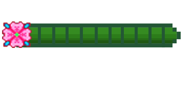
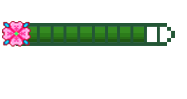

Word 1 - About Me

Teamwork
Creativity
Deadline
Desde que me entendo por gente sempre fui encantada com a tecnologia, principalmente digital. Durante minha adolescência tive os primeiros contatos com HTML e CSS através do blogger, no qual eu adorava passar horas editando as linhas de código e pensando em um estilo/cara para o meu blog. Atualmente quero utilizar essa mesma paixão para iniciar na carreira de front-end e me desenvolver constantemente.
Word 2 - Legendary Skin
Médica Veterinária
Não, você não leu errado! Sou médica veterinária formada e estou em processo de migração de área de atuação. Pode parecer estranho, mas essa mudança veio enquanto eu estudava programação para criar meu próprio site dos meus serviços veterinários. Acabei me encantando pela área, que somado a minha paixão láaaaa da adolescência me fez querer trabalhar com a área.